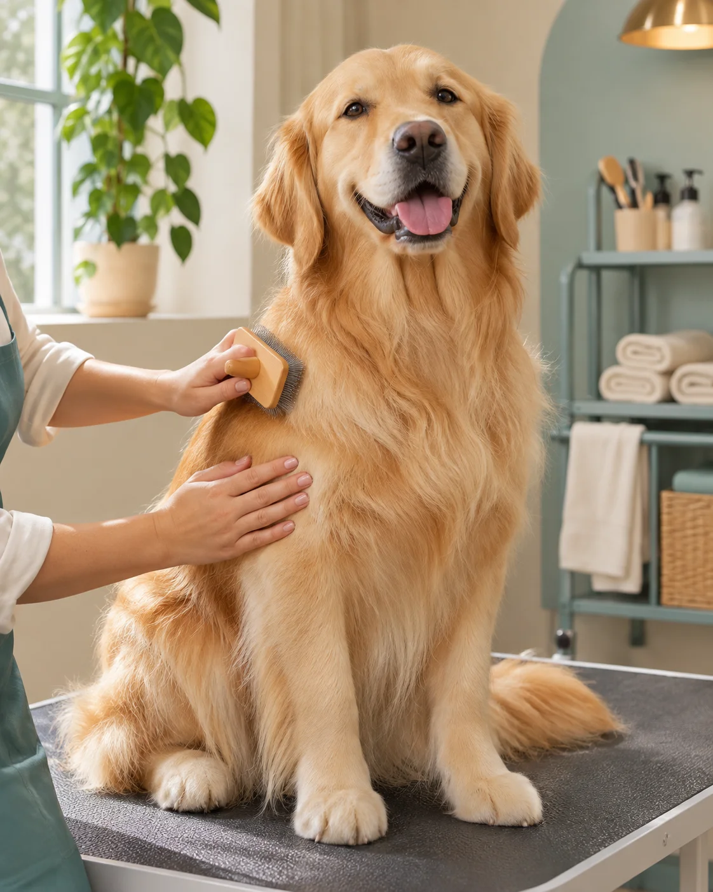
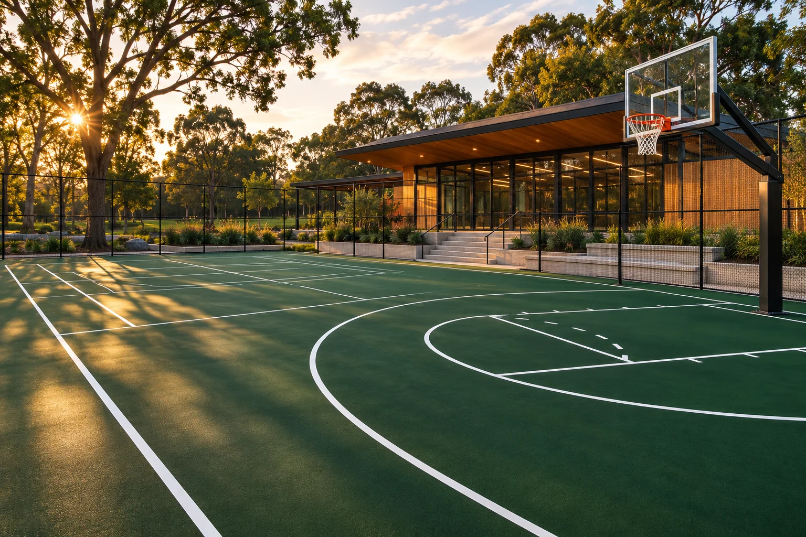

Um site.
Quatro maneiras
de conectar.
Sites para barbearias, maquiagem, petshops e quadras esportivas. Explore quatro modelos com identidades próprias e descubra uma nova forma de apresentar seu negócio.
Conhecer os projetosProjetos em destaque.
Cada modelo tem sua própria identidade.
Todos foram pensados para o celular.
4 projetos disponíveis.
 01 / Barbearia
01 / BarbeariaHighTop
Contraste, atitude e um atendimento que começa pelo visual.
 02 / Maquiagem
02 / MaquiagemAura Makeup
Leveza, elegância e uma experiência que valoriza cada detalhe.

03 / PetshopPata & Prosa
Uma presença acolhedora para quem cuida de quem faz parte da família.

04 / Quadras esportivasArena Move
Energia, clareza e espaço para o próximo encontro da sua turma.
O seu negócio tem
uma personalidade.
O seu site também.
Este portfólio reúne modelos demonstrativos para diferentes segmentos. Cada página apresenta serviços e uma proposta visual própria, para que você possa explorar a experiência completa.
Os projetos são exemplos de apresentação digital, com imagens ilustrativas. Os agendamentos podem ser conectados ao endereço de um sistema externo.
Escolha seu próximo projeto